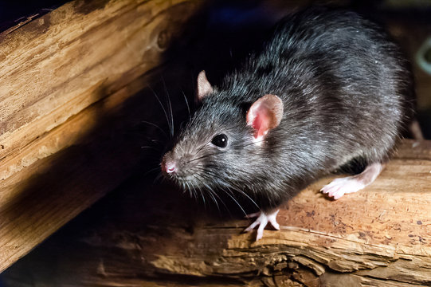

En nuestra comunidad se ha presentado un problema con la presencia de ratas, principalmente por la acumulación de basura y la falta de higiene en algunos espacios. Esto puede afectar la salud de las personas y generar un ambiente desagradable. Por esta razón, nuestro proyecto busca identificar las causas del problema y plantear una posible solución para disminuir la presencia de estos animales.
Los avistamientos se registran por medio de un formulario en nuestra plataforma. Cuando una persona observa una rata, puede reportar el caso indicando la fecha, hora, lugar y cantidad de ratas observadas. También puede agregar una descripción y una fotografía como evidencia. Una vez enviado el reporte, la información queda almacenada en el sistema y puede ser consultada por los encargados. Esto permite llevar un registro organizado y conocer las zonas donde se presentan más avistamientos para facilitar el monitoreo y tomar medidas de prevención.